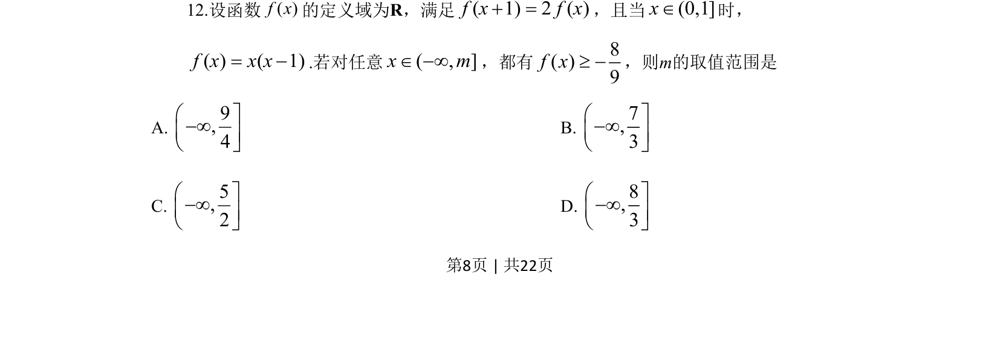
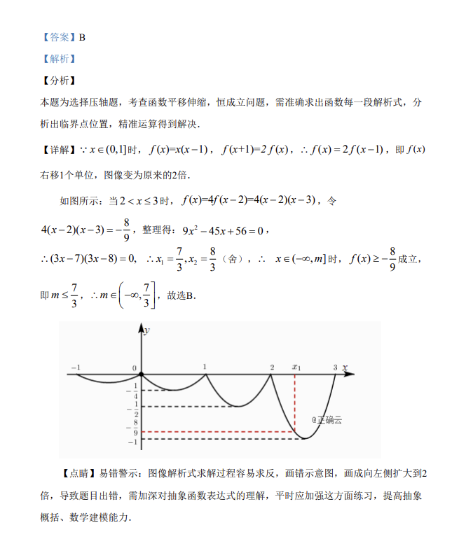

考点：抽象函数 递推关系 最值 恒成立问题

函数f满足f(x+1)=2f(x)且x∈(0,1]时f(x)=x(x-1)，对任意x∈(-∞,m]均有f(x)≥-8/9，求m的取值范围。

📄 原 PDF 第 8 页：
素材/真题/吉林/2008-2024·（吉林）数学高考真题/2019年高考数学试卷（理）（新课标Ⅱ）（解析卷）.pdf
12.设函数( )f x的定义域为R，满足( 1) 2 ( )f x f x =，且当(0,1]xÎ时， ( ) ( 1)f x x x= .若对任意( , ]x mÎ ¥，都有8( )9f x³ ，则m的取值范围是 A. 9,4æ ù¥çúè û B. 7,3æ ù¥çúè û C. 5,2æ ù¥çúè û D. 8,3æ ù¥çúè û